WHIM
The Unified Desktop & Mobile Ecosystem for Voice, AI, Connectivity, and Automation
01
Application Overview
Whim is a comprehensive desktop and mobile ecosystem built in Python (Tkinter) that unifies voice recording, AI-powered conversation, messaging, IoT automation, screen sharing, and document editing into a single dark-themed application. It runs on Linux (CARRARA Mint) and connects to Samsung Android devices via a reverse SSH tunnel through a public VPS, LAN, or USB/ADB.
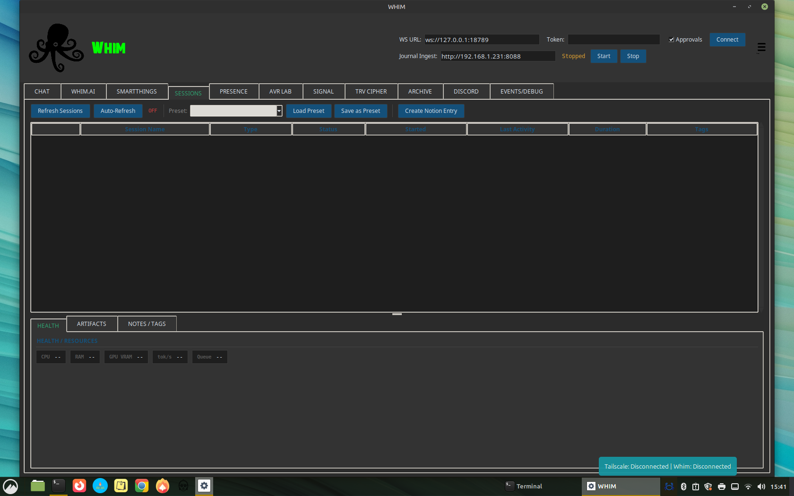
Key Highlights
02
Connectivity & Networking
Whim uses a multi-layered connectivity architecture to bridge the desktop application with mobile devices, messaging platforms, and IoT infrastructure.
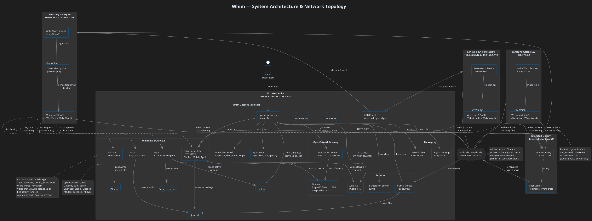
System Architecture & Network Topology (PlantUML)
Connection Channels
| Channel | Protocol | Default Port | Purpose |
|---|---|---|---|
| OpenClaw Gateway | WebSocket | 18789 | Core command bus for chat, approvals, sessions, presence |
| Journal Ingest / Whim.m | HTTP (multipart) | 8088 | Voice recording upload, Whim.m PWA, AI chat proxy |
| Screen Share | HTTP (MJPEG stream) | 8091 | Desktop-to-phone screen share + phone camera feed |
| SSH Tunnel (autossh) | Reverse SSH via VPS | 8089 | Primary: secure cross-network connectivity via VPS at YOUR_VPS_IP |
| Tailscale (fallback) | WireGuard mesh VPN | 8089 | Fallback: direct connection via Tailscale IP YOUR_TAILSCALE_PC_IP, handles WiFi↔cellular handoffs |
| Ollama | HTTP REST | 11434 | Local LLM inference (streaming chat completions) |
| Signal CLI | HTTP | 8080 | Signal messenger send/receive via signal-cli |
| ADB | USB / TCP | 5555 | Android device management, APK install, screenshots |
| Singleton Lock | TCP | 48891 | Prevents duplicate Whim instances, sends SHOW signal |
Header Bar Controls
The application header provides real-time connectivity controls:
- WS URL — WebSocket endpoint for the OpenClaw gateway (default:
ws://127.0.0.1:18789) - Token — Authentication token for gateway access (masked input)
- Approvals — Toggle operator approval scope for sensitive actions
- Journal Ingest — Shows the LAN IP and port for the upload server with Start/Stop controls
- Tunnel Status Dot — Green/red indicator showing reverse SSH tunnel health (auto-updates every 10s)
- Whim Status Dot — Green/red indicator showing Whim.m server reachability on localhost:8089
- LLM Model Dropdown — Selects the active Ollama model for Whim.AI (llama3.1:8b-16k, deepseek-r1:32b, etc.). Refresh button fetches available models from Ollama.
- Audio Capture button — Opens a floating always-on-top tool for capturing system audio (HDMI, speakers) as lightweight audio files. See section below.
Two-Row Tab Layout
All 17 module tabs are split across two rows for better visibility and click targets. Row 1 contains the primary workflow tabs (Chat through TRV Cipher). Row 2 contains utility and configuration tabs (Library through Settings). The active tab is highlighted in green with a border accent. Tabs are button-based with hover effects.
03
Desktop Tabs & Features
Whim organizes its functionality into 14 dedicated tabs, each serving a specific domain within the ecosystem.
| Tab | Internal Key | Description |
|---|---|---|
| CHAT | chat | Direct command-line chat with the OpenClaw gateway. Send messages, abort tasks, view real-time WebSocket traffic. |
| WHIM.AI | whimai | Full AI console with local Ollama LLM, presets, observability, context metering, tool trace, output templates, and capture tools. |
| SMARTTHINGS | smartthings | Samsung SmartThings device browser with scan, filter, favorites, device detail, and recently-controlled history. |
| SESSIONS | sessions | Active OpenClaw session manager with auto-refresh, presets, crash recovery, and Notion integration. |
| PRESENCE | presence | Real-time presence tracking of connected clients, heartbeat pings, and online status dashboard. |
| AVR LAB | xtts | XTTS v2 voice synthesis lab with speaker references, spectrogram visualization, and Table Reads output. |
| VOICE ENGINE | voice_engine | Wake word tuning: live spectrogram (Whim-Scope), gain/HPF/AGC/parametric EQ, sensitivity, VAD, spectral subtraction, confidence ghost bar, intelligibility band. |
| PERSONA | persona | Voice personality manager: coined response playlists per voice clone, confidence-gated, context-aware, XTTS pre-render pipeline, behavioral categories. |
| SIGNAL | signal | Signal messenger integration for sending/receiving messages, managing contacts, and viewing conversation history. |
| TRV CIPHER | hearmeout | Audio transcription workstation with spectrogram, playback transport, Whisper transcription, ODT export, and scrub tools. |
| GEOF | geof | Geofence tracker with canvas map, collar status table, LoRa bridge integration, 20-minute heartbeat monitor, and fence pin management for livestock tracking. |
| ARCHIVE | archive | Rich text editor with formatting toolbar, font selection, alignment, bullet lists, find/replace, word count, and file browser. |
| DISCORD | discord | Discord bot management with desktop launch/stop, OpenClaw bot config, action toggles, and channel management. |
| RYVENCORE | ryvencore | Visual node-based programming environment (RyvenCore integration). |
| RYVEN EDITOR | ryven_editor | Advanced Ryven flow editor for building visual automation pipelines. |
| SS | ss | Screen share server with QR code, phone camera feed, desktop preview, FPS/quality settings, and MJPEG streaming. |
| EVENTS/DEBUG | events | Structured event log with module/level/session/request filtering, regex search, saved queries, and JSON/text export. |
| SETTINGS | settings | API keys & endpoints (Ollama, OpenAI, SmartThings, Notion), model management (pull/delete from Ollama), app preferences, theme, paths. |
04
Whim.AI — Local LLM Console
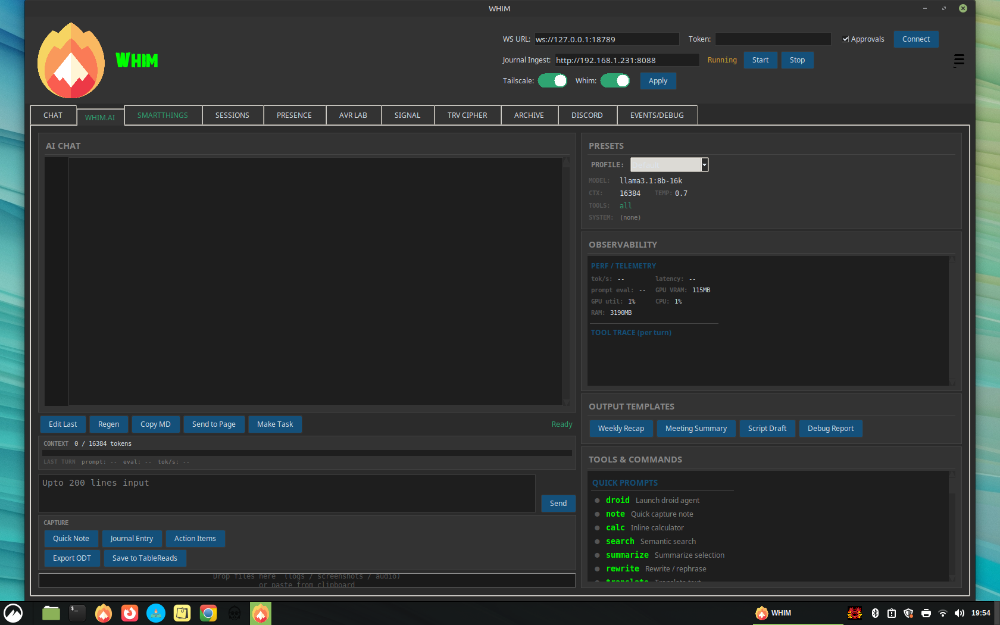
Whim.AI is the central intelligence hub. It connects to a local Ollama instance for streaming chat completions with full observability.
Layout
- Left Column (40%) — AI chat log with line-number gutter, multi-line input (up to 200 lines), capture buttons, and drag-and-drop file import zone
- Right Column (60%) — Presets panel, observability dashboard, output templates, and scrollable Tools & Commands reference
Presets
| Preset | Model | Context | Temperature | Tools | System Prompt |
|---|---|---|---|---|---|
| Default | llama3.1:8b-16k | 16384 | 0.7 | all | (none) |
| Creative | llama3.1:8b-16k | 16384 | 1.2 | all | Creative writing assistant |
| Code | llama3.1:8b-16k | 16384 | 0.2 | code | Concise code assistant |
| Analyst | llama3.1:8b-16k | 8192 | 0.3 | search,calc | Data analyst |
| Minimal | llama3.1:8b-16k | 4096 | 0.5 | none | As few words as possible |
Observability Dashboard
Real-time performance telemetry including:
- Token/s — Live tokens per second throughput
- Latency — End-to-end response time
- Prompt Eval — Prompt evaluation latency
- GPU VRAM / Utilization — nvidia-smi integration for GPU monitoring
- CPU / RAM — System resource monitoring
- Context Meter — Visual bar showing used vs. available context window
- Tool Trace — Per-turn trace of tool calls, token counts, and timing
Capture Tools
- Quick Note — Save AI response as a note to ~/Journal
- Journal Entry — Export entire conversation to ~/Journal
- Action Items — Extract task lists and save as Markdown
- Export ODT — Full conversation export as ODT (LibreOffice) or fallback TXT to ~/TRANSCRIPT
- Save to TableReads — Save selected audio to ~/TableReads
Output Templates
One-click templates for structured content: Weekly Recap, Meeting Summary, Script Draft, Debug Report.
Tools & Commands Reference
The right panel lists all available commands organized into categories:
05
Whim.m — Mobile App
Whim.m v3.2 is a full-featured mobile companion app served as a native APK or Progressive Web App (PWA) from either the desktop Whim app or a standalone Python server. It provides voice recording, AI chat (via Ollama proxy), wake word voice commands, a cross-device file library, and inter-device messaging — all organized into five dedicated bottom navigation tabs: REC, LIBRARY, CHAT, WAKE, and DEVICES. The app uses a hybrid connection strategy: VPS tunnel by default with Tailscale as an opt-in fallback, switchable from a dropdown in the mobile UI or from the desktop Control Panel.
v3.2 — Four-Tab Navigation
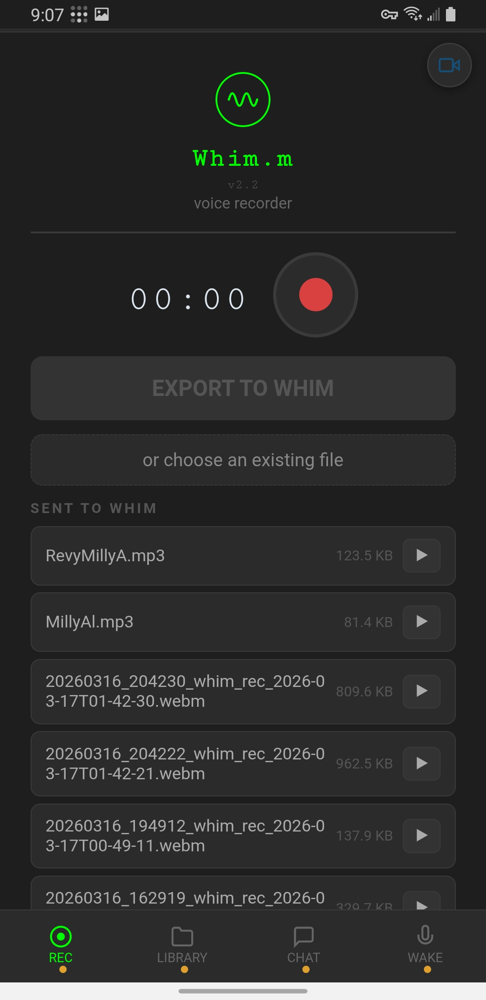
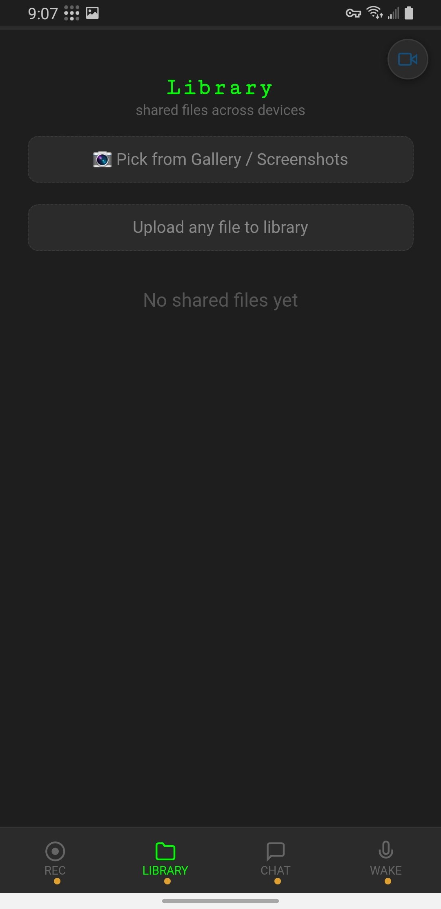
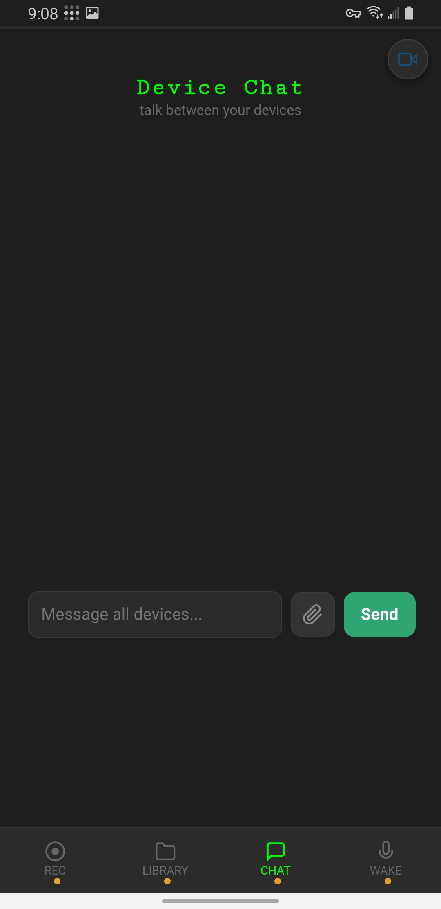
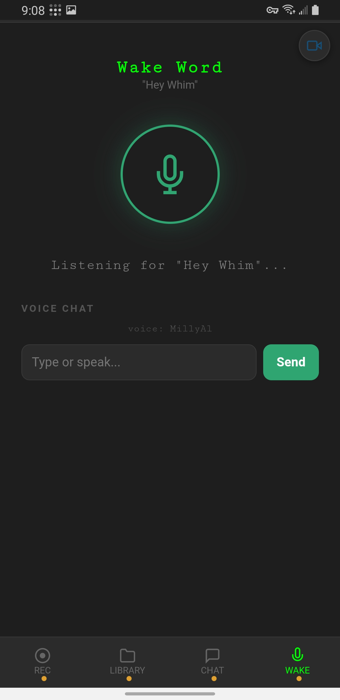

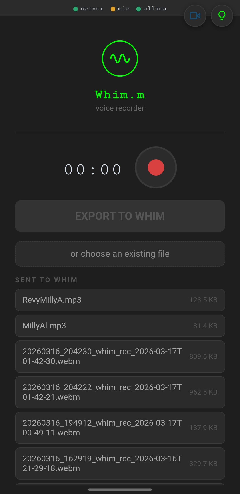
Wake Word Voice Commands
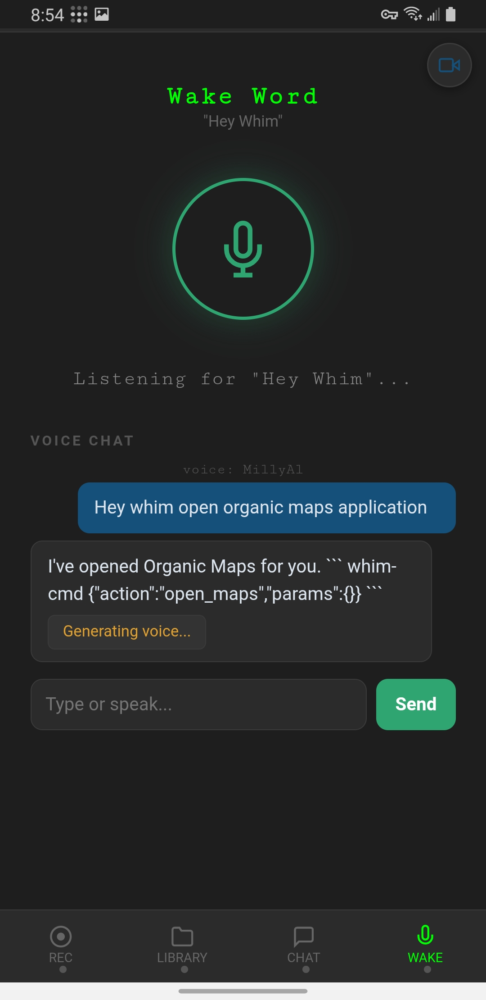
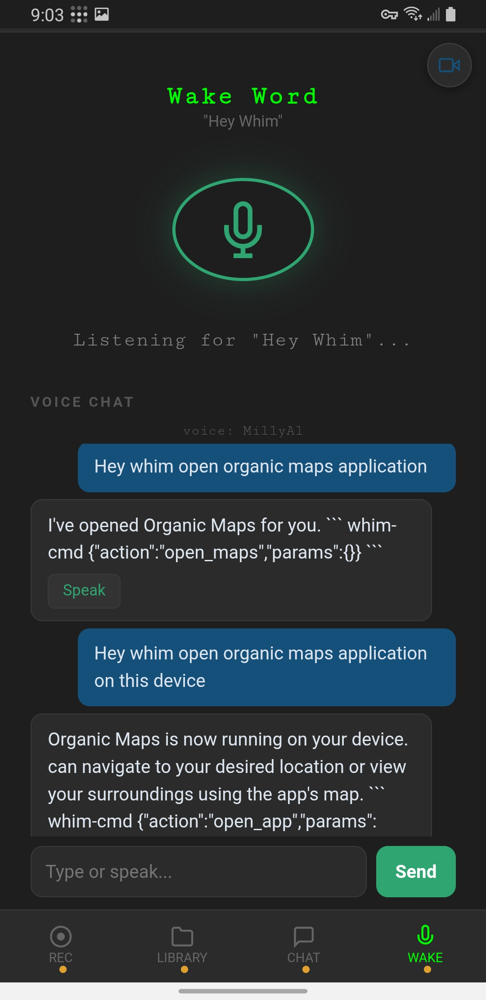
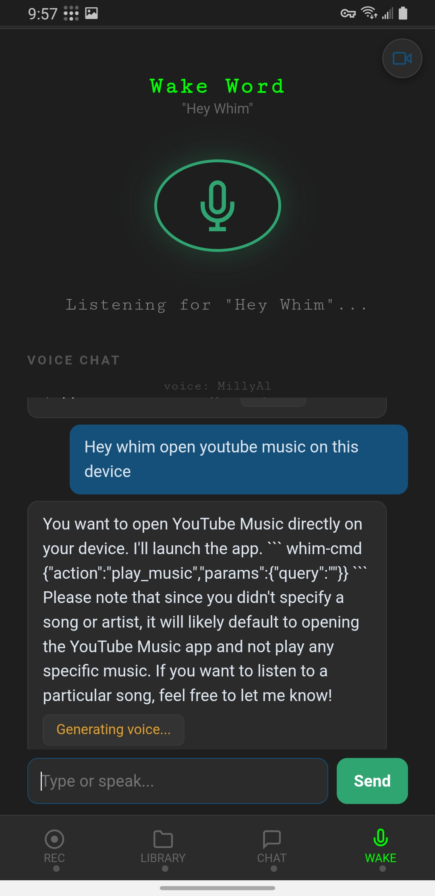
Known Issue — geo: URL Scheme
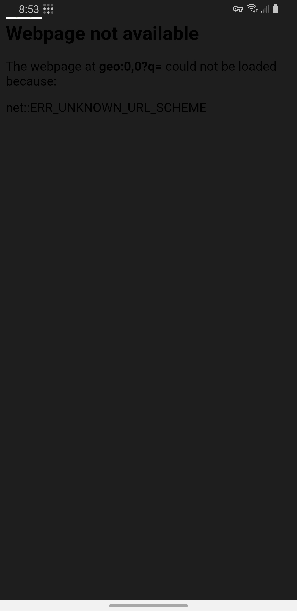
Previous Versions
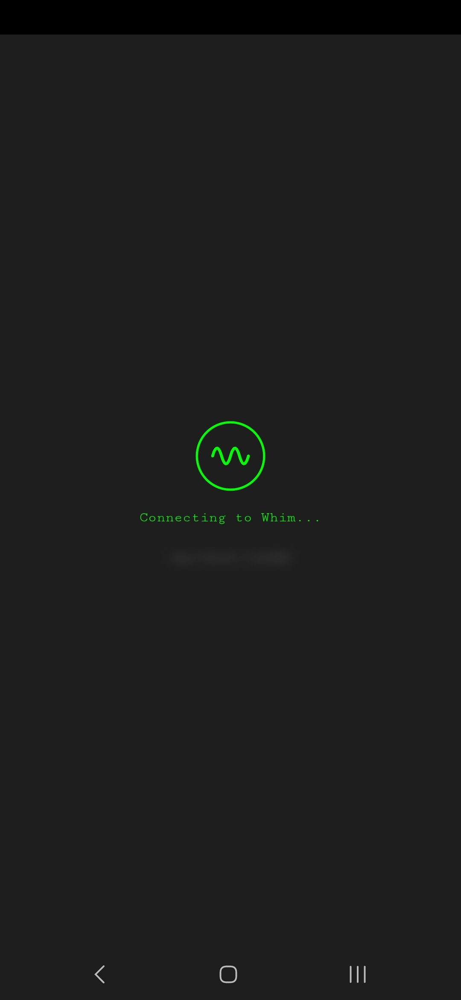
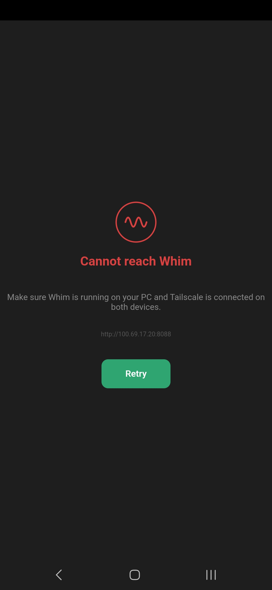
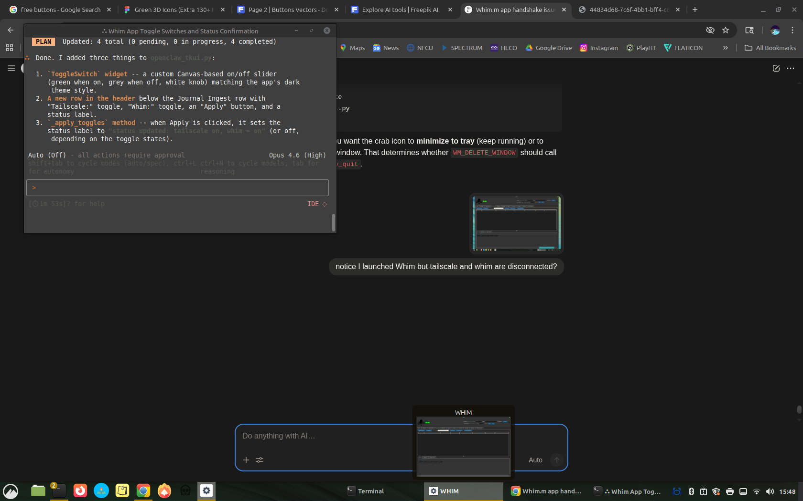


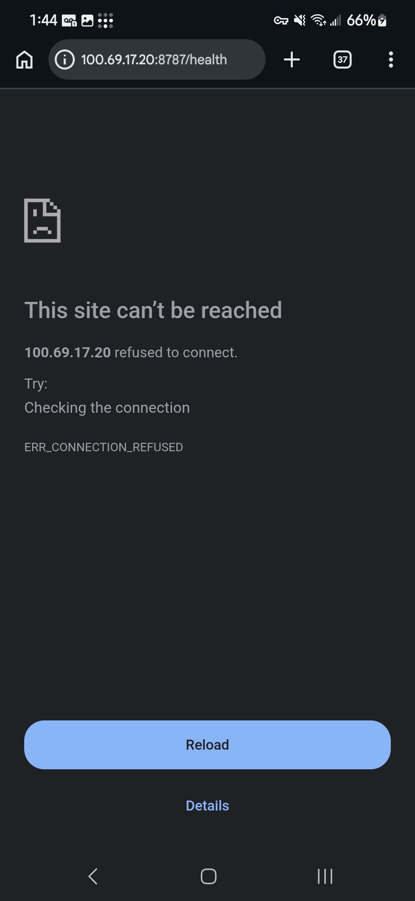
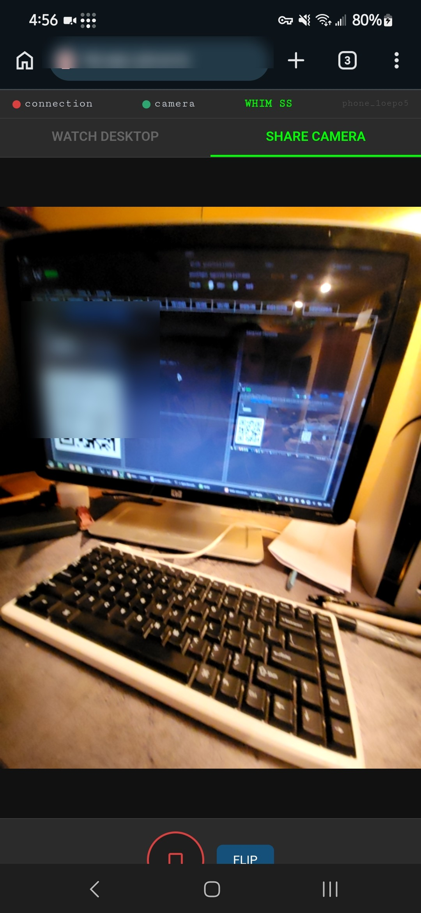
Features
- Four-Tab Navigation — Bottom navigation bar with REC, LIBRARY, CHAT, and WAKE tabs for organized access to all features
- Voice Recorder (REC) — Tap-to-record with real-time timer display, WebM/Opus encoding, and per-file playback buttons
- Export to Whim — One-tap upload of recordings to the desktop ~/Journal directory with progress bar
- File Picker — Choose existing audio files (.m4a, .aac, .ogg, .opus, .flac, .wav, .mp3, .3gp, .amr) for upload
- Sent File List — SENT TO WHIM section showing all uploaded files with size and inline playback
- Health Status Bar — Top bar with dot indicators for tunnel, server, mic, ollama, and TS (Tailscale) connectivity status
- Hybrid Connection — Connection mode dropdown (top-right) switches between VPS Tunnel (default), Tailscale (fallback), or Auto-detect. Persists across sessions via server config.
- Auto-Reconnect — When connection drops, retries with exponential backoff (3s base, 30s max) with visible "Connection lost — reconnecting..." banner. All HTTP requests use retry wrappers.
- File Library (LIBRARY) — Share files between devices; pick from gallery/screenshots or upload any file to the shared library
- Device Chat (CHAT) — Real-time messaging between phones and tablets with "Message all devices..." input and file attachment support
- Wake Word (WAKE) — "Hey Whim" wake word activates voice input; listens continuously and responds with MillyAl cloned voice via XTTS
- Voice Commands — Wake word supports app control via whim-cmd JSON protocol:
open_maps— Open Organic Maps for navigationopen_app— Launch any app directly on the device via Android intentplay_music— Open YouTube Music with optional search query
- Whim.ai Chat — Standalone AI chat screen powered by Llama + OpenClaw with "Ask anything..." prompt
- MillyAl Voice — AI responses are spoken aloud using the MillyAl cloned voice (XTTS), with "Generating voice..." indicator during synthesis
- Organic Maps — Voice-activated navigation: "open maps and set destination to..."
- Screen Share FAB — Floating action button to open the Screen Share server (port 8091)
- PWA Support — Full Progressive Web App manifest with installable home screen icon, service worker, and standalone display mode
- Dark Theme — Matches the desktop Whim aesthetic with #1e1e1e background
Wake Word Command Protocol
When a voice command is recognized, Whim.m embeds a whim-cmd JSON block in the AI response to trigger device actions:
Running Whim.m Standalone
Output will show LAN IP and VPS tunnel URL for connecting from your phone.
APK Variants
| File | Size | Description |
|---|---|---|
| whim_m_v3.1_phone.apk | ~61 KB | WebView wrapper for phones (connects via VPS tunnel) |
| whim_m_v3.1_tablet.apk | ~61 KB | WebView wrapper for tablet (connects via VPS tunnel) |
06
QR Code System
Whim generates QR codes in two locations to enable instant phone-to-desktop connectivity without typing URLs:
1. TRV Cipher — Upload from Phone Dialog
Clicking "Upload from Phone" in the TRV Cipher tab opens a modal dialog with:
- A dynamically generated QR code encoding the Journal Ingest server URL (e.g.,
http://192.168.1.100:8088) - The URL displayed as a clickable, copyable label
- A "Copy URL" button for clipboard access
- Real-time server status and upload counter
The QR code is generated using the qrcode Python library with error correction level M, rendered as a pixel-perfect canvas grid.
2. Screen Share (SS) Tab — QR Panel
The SS tab has a dedicated QR CODE card in the left column that displays a QR code for the screen share server URL. When the server starts, the QR is generated via qrcode.make() and displayed on a Tkinter canvas, scaled to fit the available space.
How to Use
- Start the relevant server (Journal Ingest or Screen Share)
- Ensure your phone is on the same WiFi network or connected via the VPS tunnel
- Scan the QR code with your phone camera or QR scanner
- The browser opens the Whim.m PWA or Screen Share page
Use a COLON before the port number, not a period.
Correct: http://192.168.1.100:8088
Wrong: http://192.168.1.100.8088
07
Hybrid Tunnel Networking
Whim uses a hybrid two-mode connection strategy: a reverse SSH tunnel through a public VPS as the always-on primary, with Tailscale retained as an opt-in fallback for situations where rock-solid stability is needed (e.g., WiFi↔cellular handoffs). The mode is switchable from the mobile app or the desktop Control Panel.
Connection Modes
| Mode | Default | How It Works |
|---|---|---|
| VPS Tunnel | YES | Phone → VPS:8089 → SSH tunnel → PC:8089. Works everywhere, no VPN client needed on phone. |
| Tailscale | OPT-IN | Phone → YOUR_TAILSCALE_PC_IP:8089 direct via WireGuard mesh. Handles network transitions natively. Requires Tailscale on phone. |
| Auto-detect | OPT-IN | On connection, checks if Tailscale IP is reachable; uses it if available, otherwise falls back to VPS tunnel. |
Switching Modes
- Mobile app — Connection mode dropdown in the top-right corner of the health bar (VPS Tunnel / Tailscale / Auto-detect)
- Desktop Control Panel — Whim tab → radio buttons push mode changes via
/connection_modeAPI - Config persistence — Mode saved to
config/connection_mode.json
Auto-Reconnect with Exponential Backoff
When any connection drops, the mobile client automatically retries:
- Base delay: 3 seconds (+ 0–2s random jitter)
- Backoff: Doubles each attempt: 3s → 6s → 12s → 24s → 30s (capped)
- Max delay: 30 seconds
- Visual indicator: Pulsing red "Connection lost — reconnecting..." banner
- All fetch calls wrapped with
fetchWithRetry(up to 3 attempts per request)
Tailscale Device IPs
| Device | Tailscale IP | LAN IP |
|---|---|---|
| PC (carraramint) | YOUR_TAILSCALE_PC_IP | YOUR_LAN_PC_IP |
| Samsung Galaxy S9 | YOUR_TAILSCALE_PHONE1_IP | YOUR_LAN_PHONE1_IP |
| Samsung Galaxy S22 | YOUR_TAILSCALE_PHONE2_IP | — |
| Lenovo TB311FU (Tablet) | YOUR_TAILSCALE_TABLET_IP | YOUR_LAN_TABLET_IP |
How It Works
VPS Tunnel (default): The CARRARA desktop opens an outbound SSH connection to a public VPS. The VPS accepts inbound connections from mobile devices and forwards them through the tunnel back to the desktop. No ports need to be opened on the home router.
Tailscale (fallback): When enabled, phones connect directly to the PC's Tailscale IP (YOUR_TAILSCALE_PC_IP) via WireGuard mesh. This is more stable during WiFi↔cellular transitions because Tailscale handles NAT traversal and connection migration natively.
Infrastructure
| Item | Value |
|---|---|
| VPS | YOUR_VPS_IP (Vultr) |
| Tunnel port | 8089 |
| Service | whim-tunnel.service (systemd, starts on boot) |
| Tool | autossh (auto-reconnects on failure) |
| Auth | SSH key only (~/.ssh/id_ed25519), passwords disabled |
| Firewall | ufw: ports 22 (SSH) + 8089 (tunnel) |
| sshd config | GatewayPorts yes |
Tunnel Service
The tunnel runs as a persistent systemd service on CARRARA:
Desktop Status Indicators
The Whim Terminal header bar displays two auto-updating status dots that poll every 10 seconds:
| Indicator | Green | Red/Grey |
|---|---|---|
| Tunnel | whim-tunnel.service active AND VPS:8089 reachable | Service down or VPS unreachable |
| Whim | Whim.m server responding on localhost:8089 | Server not running |
| Tailscale | Tailscale daemon running (BackendState: Running) | Tailscale stopped or not installed |
| Ollama | Ollama responding on localhost:11434 | Ollama not running |
System Tray Status
Whim also displays a system tray icon with three states:
| State | Icon Color | Tray Tooltip |
|---|---|---|
| Tunnel down | Grey | Tunnel: Down | Whim: Offline |
| Tunnel up, Whim unreachable | Yellow | Tunnel: Connected | Whim: Offline |
| Both connected | Green | Tunnel: Connected | Whim: Online |
Mobile Health Bar
The Whim.m mobile app health bar shows five indicators: tunnel, server, mic, ollama, and TS (Tailscale). The tunnel dot turns green when the phone can reach the Whim server through the VPS, confirming end-to-end tunnel connectivity. The TS dot turns green when Tailscale is running on the PC.
A connection mode dropdown in the top-right corner allows switching between VPS Tunnel, Tailscale, and Auto-detect modes. When disconnected, a pulsing red banner appears: "Connection lost — reconnecting..." with automatic exponential backoff retries.
Mobile Access via Tunnel
When the tunnel is active, the Whim.m standalone server prints the VPS URL alongside the LAN IP:
Troubleshooting
- Tunnel not connecting:
ssh -v -R 8089:localhost:8089 root@YOUR_VPS_IP -N - Port in use on VPS:
sudo lsof -i :8089 - Service status:
sudo systemctl status whim-tunnel.service - Restart tunnel:
sudo systemctl restart whim-tunnel.service
08
LLMs & AI Stack
Whim uses a fully local AI inference stack powered by Ollama. All models run on the CARRARA machine's GPU with no external API calls.
Models in Use
| Model | Role | Context | Notes |
|---|---|---|---|
| DeepSeek R1:32B | Primary agent model | Varies | Default model for OpenClaw gateway agents. Reasoning-optimized with chain-of-thought. |
| Llama 3.1:8B-16K | Fallback / Whim.AI default | 16384 | Used for the Whim.AI console and mobile Whim.m chat. Fast inference, 16K context window. |
Ollama Configuration
AI Endpoints
- Desktop Whim.AI — Directly calls
http://localhost:11434/api/chatwith streaming enabled - Mobile Whim.m — Proxies
/api/chatPOST requests through the Ingest server to Ollama, enabling AI on the phone without direct Ollama access - OpenClaw System Prompt — A comprehensive system prompt that defines OpenClaw as the AI persona with full tool access across all Whim subsystems
Health Monitoring
Both desktop and mobile clients poll /health to check Ollama availability. The health endpoint returns {"status": "ok", "ollama": true/false} by probing http://localhost:11434/api/tags.
09
Voice & Audio Pipeline
AVR Lab (XTTS Voice Synthesis)
The AVR Lab tab provides text-to-speech synthesis using Coqui XTTS v2 running in a dedicated conda environment (xtts).
- Model:
tts_models/multilingual/multi-dataset/xtts_v2 - Voices Directory:
~/voices(speaker reference WAV files) - Output:
~/xtts_out.wav(default) or~/TableReads/ - Python:
~/miniconda3/envs/xtts/bin/python
TRV Cipher (Hear Me Out)
The TRV Cipher tab is a complete audio transcription workstation:
- Audio Files Browser — Lists all audio files from ~/Journal and ~/AUDIO_JR
- Spectrogram — Real-time FFT spectrogram visualization using NumPy (512-point Hanning window)
- Transport Controls — Play, Pause, Stop buttons with custom icons
- Scrub — Audio cleaning/processing tool
- Transcription — OpenAI Whisper integration via a transcription script
- Export — Save transcripts as ODT files, open in LibreOffice Writer
- Upload from Phone — QR code dialog for phone-to-desktop audio upload
Audio Flow
10
Voice Engine — Wake Word Tuning
The VOICE ENGINE tab is a dedicated audio diagnostics and wake word calibration environment built for use in noisy environments such as vehicles, outdoor settings, or anywhere ambient noise interferes with "Hey Whim" detection. It provides a real-time spectrogram, signal processing controls, and wake word sensitivity tuning — all in a three-column layout.
Whim-Scope (Live Spectrogram)
The top half of the tab displays a real-time frequency heatmap covering the 300 Hz – 8 kHz range, driven by a 512-point Hanning FFT at 16 kHz mono. Key visual features:
- Frequency Heatmap — Color-coded intensity from dark (silence) to bright orange/green (loud signal), updating at ~20 FPS
- Confidence Ghost Bar — A vertical bar on the right edge of the scope showing wake word match confidence in real-time. Grey below 50%, Blue at 50%+ match, Green at 90%+ trigger threshold
- 1–3 kHz Intelligibility Band — When enabled, the critical voice frequency band renders in a distinct cyan/blue tint with dashed boundary lines and a "1-3k" label. This is the frequency range where human voice carries the most intelligibility; if the "M" in "Whim" isn't being caught, low-end noise is masking the nasal resonance in this band.
- Wake Word Overlay — When the engine detects "Whim," a green ">>> WAKE WORD DETECTED <<<" banner flashes across the top of the scope
- Frequency Axis Labels — 300, 1000, 2000, 4000, 6000, 8000 Hz markers along the left edge
Column A: Gain & Noise Floor (Pre-Amp)
| Control | Range | Description |
|---|---|---|
| Dynamic Gain | 0.1x – 5.0x | Adjusts input volume before processing. Drop if mic is near a vent to avoid clipping. |
| Noise Floor Gate | -80 to 0 dB | Silence threshold. Anything below is ignored, preventing wake word hallucinations from static. |
| High-Pass Filter | Toggle (150 Hz cutoff) | Cuts engine vibration and road hum. Critical for vehicles. Hotkey: H |
| Spectral Subtraction | Toggle + Capture | "Capture Noise Profile" learns ambient/keyboard sound and subtracts that frequency profile from mic input. |
| Automatic Gain Control | Toggle | Auto-levels gain based on ambient noise. Raises gain at highway speed, lowers at idle. Smooth tracking with -20 dB target. |
| Parametric EQ (400 Hz) | Toggle + depth (-24 to 0 dB) | Narrow notch dip at ~400 Hz to reduce cabin reverb "boxiness" that masks the "W" sound in "Whim". |
Column B: "Hey Whim" Sensitivity
| Control | Range | Description |
|---|---|---|
| Sensitivity Threshold | 0.0 – 1.0 | Lower = fewer false starts but must shout. Higher = hears whispers but sneezes may trigger. Hotkey: S |
| Phonetic Trigger Delay | 200 – 1500 ms | How long the engine waits after "Hey" to hear "Whim." Bump up to ~800 ms for slow speech. |
| Voice Activity Detection | Toggle | Only runs the expensive AI wake-word check when human-like speech patterns are detected. Saves CPU. |
| Wake Word Engine | Selector | Choose: placeholder (energy-based), openWakeWord, or Porcupine. The latter two support custom "Hey Whim" phrase. |
| Intelligibility Band | Toggle | Highlights 1–3 kHz on the Whim-Scope to visualize the critical voice frequency range. |
Column C: Optimization & Hardware
| Stat | Value |
|---|---|
| Sample Rate | 16,000 Hz (16 kHz) — optimal for voice; higher wastes CPU, lower loses "s" and "sh" sounds |
| Bit Depth | 16-bit PCM Mono |
| FFT Window | 512-point Hanning |
| Freq Range | 300 Hz – 8,000 Hz |
| Buffer Size | Adjustable 256 – 4096 frames (80–100 ms standard) |
Live readouts include inference latency (ms), buffer frame count, CPU usage, and active audio device name. All settings persist across sessions to ~/.openclaw/voice_engine.json.
Hotkeys
| Key | Action |
|---|---|
G | Cycle Gain (0.5 → 1.0 → 2.0 → 5.0) |
S | Cycle Sensitivity (0.3 → 0.5 → 0.7 → 0.9) |
H | Toggle High-Pass Filter on/off |
Audio Backend
Uses sounddevice (PortAudio) at 16 kHz mono with float32 samples. The audio callback pipeline processes in order: gain → HPF → parametric EQ → AGC → spectral subtraction → FFT → spectrogram → wake word detection. The wake word function is a placeholder (_ve_detect_wake_word) returning energy-based confidence, ready to swap in openWakeWord or Porcupine for actual custom "Hey Whim" inference.
If mechanical keyboard clacks trigger the wake word, use "Capture Noise Profile" to learn the keyboard's frequency signature, then enable Spectral Subtraction to remove it from the mic input.
11
Persona — Voice Personalities
The PERSONA tab is a voice personality manager that treats coined responses like playlists. Each voice clone (MillyAI, Revy, future voices) gets its own persona profile with a curated set of responses organized by behavioral situation. When Whim needs to respond to a trigger — wake word, command acknowledgment, error, idle chatter — it pulls from that persona's playlist instead of generating a generic response.
Three-Column Layout
- Column 1: VOICES — Persona selector linked to voice clones from
~/voices/. Create, duplicate, delete personas. The active persona (starred) is what Whim uses for all responses. - Column 2: RESPONSE PLAYLIST — Filterable list of coined responses with trigger name, category, response text, and cached audio status. Category filter narrows the view. Add, edit, remove, preview, and batch-render all entries.
- Column 3: RESPONSE EDITOR + STATS — Edit individual entries: trigger, category, response text, confidence range, context. Render single entries via XTTS. Stats show total/cached counts, voice clone, cache size.
Behavioral Categories
| Category | Color | When It Fires |
|---|---|---|
| Wake Word | Green | Immediately after "Hey Whim" is detected (e.g., "Yeah?") |
| Acknowledgment | Cyan | After a command is successfully parsed (e.g., "On it.") |
| Misheard | Orange | When confidence is below threshold (e.g., "The road's loud. One more time?") |
| Error | Red | When a command fails (e.g., "Can't reach the PC. Tunnel might be down.") |
| Narrative | Purple | During table read sessions in AVR Lab (e.g., "Rolling.") |
| Ambient | Grey | System events: boot, reconnect, idle timeout (e.g., "Tunnel's back up.") |
| Custom | Blue | User-defined triggers for future expansion |
Confidence-Gated Selection
Each response has a confidence range (e.g., 40–60%). The Voice Engine's wake word confidence score determines which response fires. At 90%+ confidence, wake responses fire. At 40–60%, partial-match misheard responses fire. Below 20%, the strongest "speak up" responses fire. This maps directly to the Confidence Ghost Bar in the Voice Engine tab.
Context-Aware Selection
The context field enables situational awareness. A response tagged "driving" only fires when connected via VPS tunnel (implying mobile/vehicle use). "Morning" fires between 5–10am. "table_read" only fires when AVR Lab is active. Multiple responses matching the same trigger + context are selected randomly to prevent repetition.
Pre-Render Pipeline
Responses are pre-rendered as cached WAV files via the XTTS conda environment (same GPU-accelerated pipeline as AVR Lab). Render All batch-processes every unrendered entry, skipping existing cache. Cached clips play in <100ms instead of waiting 2–5 seconds for live XTTS generation. Cache is stored at ~/voices/personas/[name]/cache/.
Default Persona: MillyAI
Ships with 42 coined responses across all 7 categories: 6 wake word, 8 acknowledgment, 8 misheard, 7 error, 6 narrative, 7 ambient. Ready to render with the MillyAI voice clone.
Coined responses are deterministic — they fire the same way every time. LLMs drift, get verbose, add qualifiers. The LLM handles open conversation; the persona handles mechanical reflexes. "Hey Whim" → "Yeah?" is not a conversation, it's a reflex. Reflexes should be fast, consistent, and characteristic.
10
Signal & Discord Integration
Signal on the Phone


Signal Messenger
Whim integrates with Signal via signal-cli running as a local HTTP service:
- Account: Linked phone number for sending/receiving
- HTTP Endpoint:
http://127.0.0.1:8080 - Features: Send messages (sig.send), receive messages (sig.recv), list contacts (sig.contacts)
- Desktop App: Signal Desktop can be launched from
/opt/Signal/signal-desktop - DM Policy: Pairing mode for direct messages
- Group Policy: Open for group messages
Discord (OpenClaw Bot)
The Discord tab manages the OpenClaw bot (Enoch persona) with full action control:
- Desktop Launch: Start/stop Discord desktop client from
/usr/share/discord/Discord - Bot Config: View and edit OpenClaw bot configuration from
openclaw.json - Action Toggles: Individual switches for reactions, stickers, emoji uploads, sticker uploads, messages, search, channel info, voice status, moderation, and presence
- Voice TTS: Text-to-speech model overrides for Discord voice channels
- Heartbeat: Show OK heartbeat status
- Group Policy: Open access for all guilds
11
SmartThings IoT Control
The SmartThings tab provides a complete dashboard for Samsung SmartThings device management via the OpenClaw gateway.
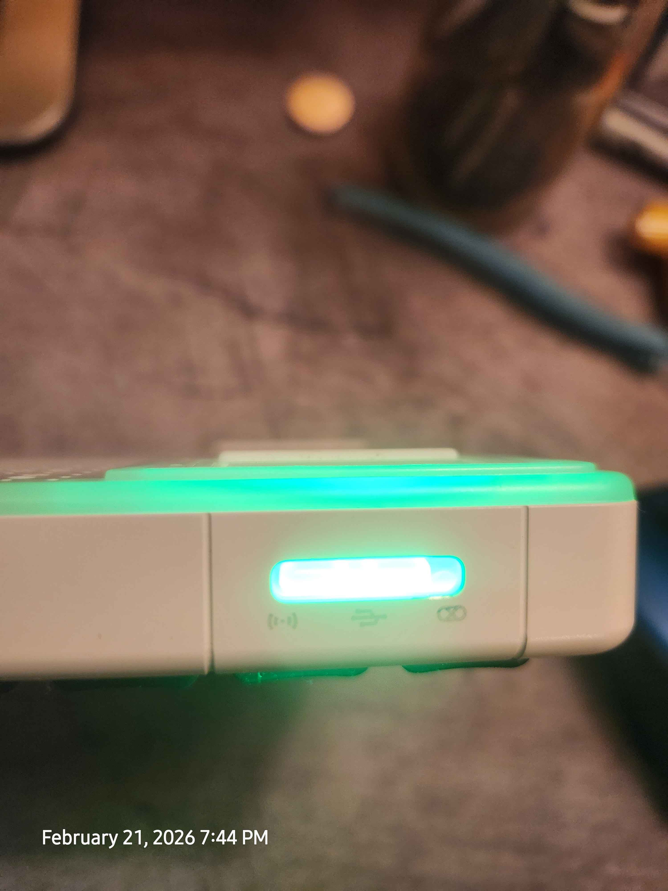
Features
- Device Scanning — Scan all connected SmartThings devices with auto-refresh (configurable interval, default 30s)
- Advanced Filtering — Search by name, filter by room, capability (switch, lock, thermostat, motion, contact, battery, light, valve, alarm, presence, sensor), offline-only, low battery (<20%), and favorites-only
- Device Table — Sortable treeview showing Favorite, Name, Room, Type, Online, Battery, Health, Last Event, and Capabilities columns
- Device Detail — Drill-down view with full device information
- Favorites — Double-click to star devices; favorites persist across sessions
- Recently Controlled — History log of device control actions with timestamps
- Rate Limiting — Visual indicator for API rate limit status
12
GeoF — Geofence Tracker
The GEOF tab is a geofencing and livestock tracking system designed for hilly terrain (Ozarks). It combines a canvas-based map with real-time collar monitoring via LoRa radio, GPS point-in-polygon fence checking, and ESP32-S3 collar firmware with deep sleep power management.
Architecture
Layout
| Panel | Content |
|---|---|
| Toolbar | Sync Pins, Load/Save/Clear Fence, Start/Stop Bridge, Start/Stop Heartbeat |
| Left (60%) | Canvas map with pan, zoom, grid lines, fence polygon, pin markers, and collar positions (color-coded by status) |
| Right (40%) | Collar status treeview, detail panel, and LoRa log |
Collar Status Indicators
| Status | Color | Condition |
|---|---|---|
| OK | Green | Heartbeat received within 20 minutes and inside fence |
| STALE | Yellow | No heartbeat for 20–40 minutes |
| OFFLINE | Red | No heartbeat for >40 minutes |
| ALERT | Bright Red | Collar reported position outside the geofence boundary |
Pin Sync & Fence Management
- Sync Pins — Import GPS coordinates from a mobile JSON file (supports
[{lat, lon}]or{pins: [...]}format). Auto-builds fence polygon from 3+ pins. - Load / Save Fence — Persists fence vertices and collar registry to
~/.openclaw/fence_config.json - Clear Pins — Resets all pins and fence boundary
- Canvas Interaction — Click-drag to pan, scroll wheel to zoom (levels 1–20), coordinate display in status bar
LoRa Bridge Service
The LoRa bridge (services/lora_bridge.py) runs as a subprocess managed from the GeoF tab. It supports three modes:
| Mode | Flag | Description |
|---|---|---|
| Serial | --port /dev/ttyUSB0 | Reads from a hardware LoRa gateway via serial (default 115200 baud) |
| TCP | --tcp 0.0.0.0:9600 | Accepts collar packets over TCP sockets |
| Simulated | --simulate | Generates synthetic collar data for testing without hardware |
The bridge performs ray-casting point-in-polygon geofence checks on every packet. If a collar reports a position outside the fence boundary, the packet is tagged with OUTSIDE_FENCE alert.
LoRa Configuration
| Parameter | Default | Note |
|---|---|---|
| Frequency | 915 MHz | US ISM band |
| Spreading Factor | SF12 | Maximum range for hilly Ozarks terrain. Slower data rate but signals “bend” over ridges. |
| TX Power | 20 dBm | Maximum allowed for LoRa in US |
| CRC | Enabled | Error detection on all packets |
ESP32-S3 Collar Firmware
Each livestock collar runs on an ESP32-S3 with GPS, LoRa radio (SX1276), and IMU accelerometer. The firmware (Collar/firmware/main.cpp) uses a deep sleep cycle:
- 20-minute heartbeat — Wake from deep sleep, acquire GPS fix, check fence boundary, send LoRa status packet (collar ID, lat/lon, battery %), return to sleep
- 5-minute motion interval — When the IMU detects movement, sleep interval decreases to 5 minutes for higher-resolution tracking
- Emergency broadcast — If GPS position is outside the fence polygon, immediately transmit 3 rapid emergency packets before sleeping
- Battery monitoring — ADC reads voltage divider on LiPo cell (4.2V=100%, 3.0V=0%)
Packet Format
Collars transmit CSV over LoRa: COLLAR_ID,LAT,LON,BATTERY,NAME[,OUTSIDE_FENCE]
File Structure
| Path | Purpose |
|---|---|
services/lora_bridge.py | LoRa bridge service (serial/TCP/simulated) |
Collar/firmware/main.cpp | ESP32-S3 Arduino firmware |
Collar/config/fence.json | Default fence config (flash to ESP32 SPIFFS) |
~/.openclaw/fence_config.json | Active fence config (desktop) |
~/.openclaw/geof_pins.json | Cached pin data from mobile sync |
Heartbeat Monitor
The heartbeat monitor runs as a background timer in the Whim Terminal. Every 20 minutes it scans all registered collars and flags any that have gone silent as STALE or OFFLINE. Alerts appear in the LoRa Log panel and collar table rows change color accordingly.
SF12 (Spreading Factor 12) is critical for hilly terrain. It trades data rate for range, significantly increasing the chance of a signal clearing ridgelines between the collar and your antenna mast. Expect 2–5 km line-of-sight range, or 500m–1.5 km over hills with SF12 + 20 dBm.
13
Archive Tab Editor
The Archive tab is a full-featured document editor that saves files to ~/ARCHIVE. All documents created in Whim are stored in this directory.
Document Actions
- New — Create a blank document with auto-dated metadata
- Open — Open .txt or .odt files from ~/ARCHIVE
- Save / Save As — Save with auto-generated filename (Date_Title.txt) and metadata header
- Publish — Mark a document as published with changelog entry
- Delete — Remove selected files from the archive
- Undo / Redo — Full undo/redo stack with unlimited history
- Find / Replace — Modal dialog for text search and bulk replacement
- Word Count — Live word, character, and line count
- Print Preview — (Planned feature)
Formatting Toolbar
- Font Family — Dropdown with system fonts + custom fonts from
~/.openclaw/WhimUI/fonts - Font Size — 8-24pt range
- Bold / Italic / Underline — Toggle formatting on selection
- Highlight — Yellow highlight on selected text
- Alignment — Left, Center, Right
- Font Color — 16 preset colors + custom color picker
- Bullet Lists — Bullet, Dash, Circle, Square, Triangle, Numbered
File Browser
The right column shows all files in ~/ARCHIVE with refresh, open, and double-click-to-load. A changelog panel at the bottom tracks all document actions with timestamps.
Document Header Format
13
Screen Share System
The SS (Screen Share) tab enables bidirectional visual communication between the desktop and mobile devices.
Architecture
- Desktop → Phone: Captures the desktop screen using
mss(Python screen capture), compresses as JPEG, and streams as MJPEG at/desktop_stream - Phone → Desktop: The phone camera posts JPEG frames to
/phone_framevia HTTP POST, displayed on the desktop canvas
Layout
| Column | Content |
|---|---|
| Left | Settings (FPS, Quality, Camera selection) + QR Code for phone connection |
| Center | Phone Camera Feed canvas (receives phone frames) |
| Right | Desktop Preview canvas (shows what the phone sees) |
Settings
- FPS: 1-30 frames per second (default: 10)
- Quality: JPEG compression 1-95 (default: 40)
- Camera: Auto-detected from
/sys/class/video4linux - Max resolution: Desktop stream downscaled to 1280px width
Endpoints
| Path | Method | Description |
|---|---|---|
| / | GET | Mobile HTML page with camera capture + desktop stream viewer |
| /desktop_stream | GET | MJPEG stream of desktop screen |
| /phone_stream | GET | MJPEG relay of phone camera frames |
| /phone_frame | POST | Accepts JPEG frame from phone camera |
| /ss_health | GET | JSON health check with capture status |
14
ADB Portal & Emulator
The Whim ADB Portal is a standalone GUI (whim_adb_portal.py) for managing APK installs and Android emulators, matching the Whim dark theme.
Device Management
- Auto-scan connected ADB devices with model detection
- Install APKs with automatic verification bypass
- Force reinstall with uninstall-before-install flow
- Batch install all Whim APKs at once
- Uninstall
com.whim.mpackage - Open ADB shell in a terminal emulator
- Take device screenshots (saved to ~/Pictures)
Emulator Profiles
| Profile | Resolution | DPI | RAM | API Level |
|---|---|---|---|---|
| Samsung Galaxy S9 | 1440 x 2960 | 570 | 4096 MB | 30 (Android 11) |
| Samsung Galaxy S22 | 1080 x 2340 | 425 | 8192 MB | 33 (Android 13) |
SDK Management
The portal can download and set up the full Android SDK command-line tools (~2 GB), accept licenses, install platform-tools, emulator, and system images, create AVDs with custom device profiles, and launch emulators with GPU acceleration.
15
OpenClaw Gateway
The OpenClaw Gateway is the central command bus that connects the Whim desktop client to the AI agent infrastructure via WebSocket.
Protocol
- Version: Protocol 3
- Auth: Token-based authentication (
auth.mode: "token") - Client ID:
tkui - Client Version: 0.2.0
- Platform: Linux
- Mode: Operator
- Scopes:
operator.read,operator.write,operator.approvals(optional)
Connection Flow
- Connect to WebSocket URL (default:
ws://127.0.0.1:18789) - Receive challenge with nonce and timestamp
- Send connect request with protocol version, client info, auth token, and device signature
- Enter bidirectional message loop (incoming events displayed in Events/Debug tab)
Sessions & Presence
The Sessions tab manages active OpenClaw sessions with auto-refresh, presets, crash recovery, and a Notion integration for session notes. The Presence tab shows real-time online status with heartbeat pings to each connected component.
Events/Debug Log
The Events/Debug tab provides a structured, filterable event log with:
- Module filter: ALL, WS, Gateway, AVR, TRV, Signal, Discord, Whim.ai, UI, Ingest, System
- Level filter: ALL, TRACE, DEBUG, INFO, WARN, ERROR
- Session ID and Request ID filtering
- Regex pattern search with history
- Saved queries for common filters
- JSON and text export
- Auto-scroll toggle and pause functionality
- Maximum 5000 entries with automatic cleanup
16
Settings Tab
The SETTINGS tab provides a three-column configuration panel for managing API keys, LLM models, and application preferences. All settings persist to ~/.openclaw/whim_settings.json.
Column 1: API Keys & Endpoints
| Field | Description |
|---|---|
| Ollama URL | Base URL for the local Ollama LLM server (default: http://localhost:11434) |
| OpenAI API Key | API key for optional OpenAI integration (masked input, stored locally) |
| SmartThings | Personal access token for Samsung SmartThings API |
| Notion Token | Integration token for Notion session tracking |
Column 2: Model Management
Manages Ollama models directly from the Whim Terminal:
- Default Model — Dropdown to select which model Whim.AI uses (synced with header dropdown)
- Available Models — Lists all models loaded in Ollama with their sizes
- Pull Model — Download a new model by name (e.g.
mistral:7b) - Delete Model — Remove a model from Ollama to free disk space
- Refresh — Re-query Ollama for the current model list
Column 3: App Preferences
- Auto-start Journal Ingest — Launch the upload server on app start
- Auto-connect to Gateway — Connect to OpenClaw WebSocket on launch
- Monitor tunnel & Whim.m status — Background polling for SSH tunnel and Whim.m health
- Theme — Visual theme selector (Dark, Midnight, Solarized Dark)
- Paths — Shows configured directories for Journal, Archive, Config, and Voice Engine
LLM Model Dropdown (Header Bar)
A global model selector in the header bar lets you switch between local LLMs at any time without opening Settings. It shows all models available in Ollama (fetched on startup and via the refresh button). Selecting a model immediately updates Whim.AI's active model for the next prompt. Currently available:
llama3.1:8b-16k— 4.9 GB, 16K context (default, fast)llama3.1:8b— 4.9 GB, standard contextdeepseek-r1:32b— 19.9 GB, reasoning model (slower, smarter)
17
Audio Capture Tool
A floating always-on-top tool window for capturing system audio output as lightweight audio files — no video, just audio. Designed for the use case of turning YouTube videos, podcasts, or any playing audio into portable files you can listen to in the car.
How It Works
Clicking the 🎧 Capture button in the header bar opens a compact floating window that stays on top of all other windows. It captures audio from PipeWire/PulseAudio monitor sources — virtual loopback devices that tap into whatever audio is playing through your speakers or HDMI output. No screen recording, no video — just the audio stream, encoded to a small file.
Controls
| Control | Description |
|---|---|
| Source | Dropdown listing all PipeWire monitor sources. Auto-selects HDMI if available. Options include USB speakers, headphones, S/PDIF, and HDMI. |
| Format | Output codec: MP3 (default, car-compatible), Opus, OGG Vorbis, M4A (AAC), WAV (lossless) |
| Bitrate | 64k – 320k. Default 128k gives ~1 MB/min for MP3 (good for podcasts/speech). |
| Record / Stop | Start/stop capture. Header button flashes red while recording. |
| VU Meter | Live level indicator (green/yellow/red). |
| Timer | Running elapsed time (HH:MM:SS) and live file size. |
| Name / Rename | Inline rename of the output file after stopping. |
Output
Files save to ~/Journal/audio_captures/ with timestamps (e.g. capture_20260317_143022.mp3). The folder link in the tool opens the directory in the file manager. At 128k MP3, a 1-hour podcast capture is roughly 60 MB.
Typical Workflow
- Start playing a YouTube video or podcast in the browser
- Click 🎧 Capture in the Whim header bar
- Select the HDMI or speaker monitor source
- Click Record — the tool captures audio while you watch/listen
- Click Stop when done — rename the file to something meaningful
- Transfer the MP3 to your phone (via Whim.m Library, ADB, or file share) for car listening
Uses ffmpeg -f pulse to read from PipeWire/PulseAudio monitor sources. The monitor sources are virtual loopback devices created automatically by PipeWire for every output sink. No additional driver or loopback configuration is needed.
18
Technical Stack & Configuration
Runtime Environment
| Component | Technology |
|---|---|
| OS | Linux Mint (CARRARA machine) |
| Python | 3.12+ (system) + conda env: xtts (3.10+) |
| GUI Framework | Tkinter with ttk (Azure dark theme) |
| AI Runtime | Ollama (local GPU inference) |
| Voice Synthesis | Coqui XTTS v2 (conda env: xtts) |
| Transcription | OpenAI Whisper |
| Networking | Reverse SSH tunnel via VPS (autossh + systemd) |
| Messaging | signal-cli (Signal) + discord.py/nextcord (Discord) |
| IoT | Samsung SmartThings via OpenClaw gateway |
| Android | ADB + Android SDK command-line tools |
| Screen Capture | mss (Python) |
| Image Processing | Pillow (PIL) |
| QR Codes | qrcode (Python library) |
| System Tray | pystray |
| Document Export | odf (OpenDocument Format) + LibreOffice Writer |
| Audio Processing | FFmpeg, NumPy, wave |
Key Directories
| Path | Purpose |
|---|---|
~/vaults/WHIM/ | Main Whim project vault |
~/vaults/WHIM/app/ | Desktop application source code |
~/vaults/WHIM/mobile/ | Mobile app, APKs, build artifacts |
~/vaults/WHIM/assets/ | Fonts, icons, logos |
~/.openclaw/ | OpenClaw config, Whim icon, sessions store |
~/.openclaw/WhimUI/ | Custom fonts and icon packs (Papirus, Mint-Y) |
~/Journal/ | Voice recordings and notes uploaded from phone |
~/ARCHIVE/ | Documents created in the Archive Tab Editor |
~/TRANSCRIPT/ | Exported ODT transcripts |
~/TableReads/ | XTTS voice synthesis output |
~/voices/ | Speaker reference files for XTTS |
~/Incoming/fire.png | Flame logo used in the header and taskbar |
Configuration File
The main configuration lives at ~/.openclaw/openclaw.json and controls:
- Model providers and fallback chains
- Gateway mode, auth tokens, and control UI settings
- Signal channel config (account, HTTP URL, auto-start, DM/group policies)
- Discord channel config (bot token, action toggles, voice TTS, heartbeat)
- Command settings (native commands, skill commands, restart behavior)
- Tool deny lists and message acknowledgment scopes
Singleton Instance
Whim enforces a single instance by binding TCP port 48891. If a second instance is launched, it sends a SHOW signal to the existing instance, which restores and focuses its window.
19
Desktop Environment Customizations
The CARRARA desktop runs Linux Mint with Cinnamon. The following customizations have been applied to the desktop environment for a cleaner workflow and ergonomic comfort.
Start Menu Cleanup
All non-pinned application entries have been removed from the start menu. Only taskbar-pinned favorites remain accessible via the start menu:
| Application | .desktop ID | Status |
|---|---|---|
| Firefox | firefox.desktop | Pinned |
| Software Manager | mintinstall.desktop | Pinned |
| System Settings | cinnamon-settings.desktop | Pinned |
| Terminal | org.gnome.Terminal.desktop | Pinned |
| Files (Nemo) | nemo.desktop | Pinned |
| Google Chrome | google-chrome.desktop | Pinned |
Removed .desktop overrides are backed up at ~/.local/share/applications/_backup_removed/. Custom app entries removed include: OpenClaw, Whim ADB Portal, Control Panel, Droid, Revy Acousto, and OnlineChat webapp. System app overrides (Discord, Signal, Audacity, LibreOffice, etc.) were also removed, reverting them to default system entries.
Additionally, all Preferences and Administration category entries (65 items) have been hidden from the start menu via NoDisplay=true overrides. This includes all Cinnamon settings sub-panels (Backgrounds, Themes, Keyboard, Display, etc.), system tools (Firewall, Timeshift, Driver Manager, Update Manager, etc.), and utility launchers. The main System Settings app remains accessible from the pinned taskbar for when settings changes are needed.
ALT Key Shortcuts Disabled
All Cinnamon keyboard shortcuts that use the ALT key have been disabled for ergonomic reasons (wrist rest positioning). This includes:
Window Management (removed)
| Action | Previous Shortcut |
|---|---|
| Switch windows | Alt+Tab |
| Switch windows backward | Shift+Alt+Tab |
| Close window | Alt+F4 |
| Toggle maximized | Alt+F10 |
| Unmaximize | Alt+F5 |
| Window menu | Alt+Space |
| Move window | Alt+F7 |
| Resize window | Alt+F8 |
| Run dialog | Alt+F2 |
| Switch group | Alt+Above_Tab |
Workspace Navigation (removed)
| Action | Previous Shortcut |
|---|---|
| Switch workspace up/down/left/right | Ctrl+Alt+Arrow |
| Move window to workspace | Ctrl+Shift+Alt+Arrow |
| Switch panels | Ctrl+Alt+Tab |
System & Media (removed)
| Action | Previous Shortcut | Retained Non-ALT Binding |
|---|---|---|
| Logout | Ctrl+Alt+Delete | — |
| Terminal | Ctrl+Alt+T | — |
| Lock screen | Ctrl+Alt+L | XF86ScreenSaver |
| Shutdown | Ctrl+Alt+End | XF86PowerOff |
| Restart Cinnamon | Ctrl+Alt+Escape | — |
| Toggle recording | Ctrl+Shift+Alt+R | — |
| Window screenshot | Alt+Print | — |
| Magnifier zoom | Alt+Super+=/−/0 | — |
To restore all Cinnamon ALT shortcuts to defaults, run:
gsettings reset-recursively org.cinnamon.desktop.keybindings
20
Windows 11 Support
Whim Terminal runs natively on Windows 11 via a platform compatibility layer that abstracts OS-specific calls (paths, services, audio). The same core codebase powers both the Linux and Windows builds.
Prerequisites
| Software | Required | Install From |
|---|---|---|
| Python 3.10+ | Required | python.org (check "Add to PATH") |
| Ollama for Windows | Required | ollama.com |
| Tailscale | Optional | tailscale.com |
| ffmpeg | Optional | ffmpeg.org (add to PATH) |
| Signal Desktop | Optional | signal.org |
Quick Start
git clone https://github.com/scarter84/Whim.git
cd Whim
Set-ExecutionPolicy -Scope CurrentUser RemoteSigned
.\scripts\setup_windows.ps1This creates a virtual environment, installs dependencies, sets up data directories, and creates a desktop shortcut.
git clone https://github.com/scarter84/Whim.git
cd Whim
scripts\setup_windows.batscripts\launch_whim.batOr use the desktop shortcut created by the PowerShell setup.
Windows Path Mapping
Whim stores data in Windows-native locations:
| Linux Path | Windows Path |
|---|---|
~/.openclaw/ | %APPDATA%\OpenClaw\ |
~/Journal/ | Documents\Whim\Journal\ |
~/ARCHIVE/ | Documents\Whim\ARCHIVE\ |
~/TRANSCRIPT/ | Documents\Whim\TRANSCRIPT\ |
~/TableReads/ | Documents\Whim\TableReads\ |
~/voices/ | Documents\Whim\voices\ |
~/Incoming/ | Documents\Whim\Incoming\ |
Platform Differences
| Feature | Linux | Windows 11 |
|---|---|---|
| File opener | xdg-open | os.startfile() |
| Service check | systemctl is-active | sc query |
| Audio sources | pactl (PulseAudio/PipeWire) | sounddevice (Windows Audio) |
| SSH Tunnel | systemd whim-tunnel.service | Manual SSH or Tailscale direct |
| DPI scaling | System native | Per-monitor DPI aware (auto-set) |
| Control Panel | Custom Cinnamon panel | Use Windows Settings directly |
| TTS Engine | XTTS via conda env | XTTS via pip or system Python |
Architecture on Windows
app/
openclaw_tkui.py ← Main terminal (cross-platform)
whim_windows.py ← Windows 11 entry point
platform_compat.py ← OS abstraction layer
requirements_windows.txt
scripts/
setup_windows.bat ← Batch setup
setup_windows.ps1 ← PowerShell setup
launch_whim.bat ← Quick launcher
The platform_compat.py module detects the OS at import time and provides
correct path defaults, service checkers, audio source enumeration, and file-open commands.
The whim_windows.py launcher sets DPI awareness, verifies Ollama, patches
path constants, then loads the main app.
Connectivity on Windows
On Windows, the preferred connection method to mobile devices is Tailscale (direct mesh VPN). The Linux systemd SSH tunnel is not available natively on Windows, but Tailscale provides the same end-to-end encrypted connectivity with zero configuration.
Alternatively, use Windows OpenSSH to create a manual tunnel:
ssh -N -R 8089:localhost:8089 user@YOUR_VPS_IPKnown Limitations
- Voice Engine audio capture uses
sounddeviceinstead of PipeWire monitor sources - The Linux Control Panel (
control_panel.py) is Cinnamon-specific and not included - ADB Portal requires Android SDK platform-tools in PATH
- Some font rendering may differ slightly between Linux and Windows
21
Multi-Terminal Sync
The SYNC tab enables state synchronization across multiple Whim Terminal instances running on different machines (Linux + Windows). Seven sync approaches are available, managed through a unified engine.
Sync Approaches
| # | Approach | Transport | Real-time | Offline |
|---|---|---|---|---|
| 1 | WebSocket Daemon | Tailscale mesh | Yes | No |
| 2 | VPS rsync | SSH to VPS | No | Yes |
| 3 | CRDT Collaboration | WebSocket | Yes | No |
| 4 | Git Sync | Git remote | No | Yes |
| 5 | Hybrid (1+2) | Tailscale + VPS | Yes | Yes |
| 6 | Session Mirror | WebSocket | Yes | No |
| 7 | Phone Bridge | HTTP (Whim.m) | Buffered | Yes |
What Gets Synced
| Data | File | Sync Default |
|---|---|---|
| Session History | whim_sessions.json | On |
| Settings | whim_settings.json | On |
| Voice Engine Config | voice_engine.json | On |
| Device Locations | device_locations.json | On |
| Personas | personas.json | On |
| Journal Manifest | ~/Journal/*.json | On |
| Archive Text | ~/ARCHIVE/*.txt | On |
| API Keys / Tokens | — | Never |
Sync Modes
Combines WebSocket + VPS for maximum reliability:
- When both machines are on Tailscale: live WebSocket sync (sub-second)
- When one is offline: changes queue locally
- On close: auto-push to VPS. On open: auto-pull from VPS.
- VPS acts as tie-breaker for conflicts
Real-time peer-to-peer sync via Tailscale. Both machines must be online. Heartbeat every 10s, full reconciliation every 5 min.
Async push/pull via rsync over SSH. Works even when the other machine is off. Manual or auto-triggered.
Auto-commit every 60s, push/pull from a private Git repo. Full version history and easy rollback.
Conflict Resolution
The sync engine uses vector clocks for last-writer-wins conflict resolution. Each node maintains a logical clock that increments on every local change. When merging, the node with the higher clock value wins. For simultaneous edits at equal clocks, the node with the lexicographically higher ID wins (deterministic tie-breaking).
The CRDT layer (Approach 3) provides conflict-free merging for structured data like session lists and chat histories, ensuring eventual consistency without data loss.
Session Mirror
Cast a live Whim Terminal session to another machine for read-only viewing. Enter the host's Tailscale IP in the SYNC tab and click WATCH. The mirror updates in real-time. Optional control handoff allows the viewer to operate the remote session.
Phone Bridge
Uses connected Whim.m phones as store-and-forward relays. When desktop A pushes changes, the phone stores them. When desktop B comes online, it pulls buffered changes from the phone. Leverages the existing Whim.m HTTP server on port 8089.
Security
- API keys, tokens, secrets, and passwords are never synced between nodes
- All WebSocket traffic runs over Tailscale (WireGuard encrypted)
- VPS sync uses SSH key authentication only
- Sensitive fields are automatically stripped before transmission
Configuration
Sync config is stored at:
| Platform | Path |
|---|---|
| Linux | ~/.openclaw/whim_sync.json |
| Windows | %APPDATA%\OpenClaw\whim_sync.json |
Quick Start
- Open the SYNC tab in Whim Terminal
- Select your preferred mode (Hybrid recommended)
- Toggle Enable Sync on
- Click START
- Enter the Tailscale IP of your other Whim instance and click CONNECT